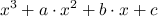
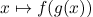
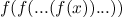
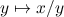
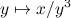
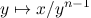

SICP 1.34 Процедуры как возвращаемые значения, упражнения 1.40-1.46
Упражнение 1.40
Определите процедуру cubic, которая может быть использована вместе с newtons-method для нахождения корней 
1 (define (cubic a b c) 2 (lambda (x) 3 (+ (* x x x) (* a x x) (* b x) c))) 4 5 (newtons-method (cubic 1 1 1) 1)
Упражнение 1.41
Определите процедуру double которая принимает процедуру как аргумент и возвращает процедуру, которая применяет переданную процедуру дважды. К примеру (double inc) должена вернуть процедуру которая два раза делает inc. Какое значение вернет (((double (double double)) inc) 5)?
1 (define (double f) 2 (lambda (x) 3 (f (f x)))) 4 (((double (double double)) inc) 0) ; 16
Упражнение 1.42
Пусть f и g две функции одного аргумента. Композицией f после g называется . Определите процедуру compose, которая составляет композицию двух функций.
1 (define (compose f g) 2 (lambda (x) (f (g x)))) 3 ((compose square inc) 6) ; 49
Упражнение 1.43
Если f числовая функция и n положительное целое, тогда мы можем n раз применить функцию к результату выполнения исходной функции, то есть . К примеру, если f(x) = x + 1, тогда если мы применим функцию n раз, то получим функцию f(x)=x+n. Если f - возведение в квадрат,тогда результирующая функция будет x в степени 2n. Напишите процедуру, что бы её можно было использовать вот таким образом ((repeated square 2) 5), используйте compose из упражнения 1.42.
1 (define (repeated f n) 2 (if (= n 1) 3 (lambda (x) (f x)) 4 (compose f (repeated f (- n 1))))) 5 6 ((repeated square 2) 5) ;; 625
Упражнение 1.44
Идея сглаживающей функции важна при обработке сигналов. Если f - функция и dx - некоторое малое приращение, тогда сглаженная версия функции f, эта функция значение которой в точке x среднее между f(x-dx) и f(x+dx). Напишете процедуру smooth которая принимает на вход функцию и возвращает сглаженную функцию f. Иногда полезно применить сглаживание несколько раз (то есть сгладить сглаженную функцию) что-бы получить n-раз сглаженную функцию. Покажите как генерировать n раз сглаженную функцию при помощи процедуры repeat из 1.43.
1 (define dx 0.00001) 2 (define (smooth f) 3 (lambda (x) (average (f (- x dx)) (f (+ x dx))))) 4 5 (define (smooth-n f n) 6 ((repeated smooth n) f)) 7 ((smooth square) 2) 8 ((smooth-n square 5) 2)
Упражнение 1.45
В разделе 1.3.3 мы видели, что вычилсить квадратные корни путем лобового нахождения фиксированной точки от  не получается, это удалось починить методом усреднения. Тот же метод работает для нахождения кубического корня. К сожалению процесс не срабатывает для корня четвертой степени. Одного усреднения не достаточно что бы выполнить поиск фиксированной точки для схождения . C другой стороны если применить усреднение два раза , поиск фиксированной точки начинает сходиться. Поэксперементируйте с количеством усреднений для вычисления корня n-ой степени, то есть на отображении . Используя это запишите процедуру для вычисления корня n-ой степени, через fixed-point, average-damp и repeated.
1 ;; 1 ; 1 0 2 ;; 2 ; 2 1 3 ; 3 1 4 ;; 4 ; 4 2 5 ; 5 2 6 ; 6 2 7 ; 7 2 8 ;; 8 ; 8 3 9 ; 15 3 10 ; 16 4 11 ; 32 4 12 ; 33 5 13 (define (nth-root x n) 14 (define (get-ad-count n i) 15 (if (< n (fast-expt 2 i)) 16 (- i 1) 17 (get-ad-count n (+ i 1)))) 18 (display (get-ad-count n 1)) 19 (fixed-point ((repeated average-damp (get-ad-count n 1)) (lambda (y) (/ x (fast-expt y (- n 1))))) 20 1.0)) 21 (nth-root 27 64)
Упражнение 1.46
Некоторые из численных методов, описанных в этой главе являются примерами примерами чрезвычайно общей вычислитетельной стратегии известной как итеративное улучшение. Итеративное вычисление говорит о том, что для вычисления чего либо, мы начнем с первоначальной догадки для ответа, проверим, является ли догадка достаточно хорошей, иначе улчучшим догадку и продолжим процесс используя улучшенную догадку в качестве новой догадки. Напишите процедуру iterative-improve которая принимает две процедуры в качестве аргументов: метод определяющий достаточно ли хороша догадка и метод улучшения догадки. Iterative-improve должна возвращать процедуру которая принимает в качестве аргумента догадку и улучшает её пока она не проходит проверку на предел. Перепишете процедуру квадратного корня и процедуру fixed-point в терминах iterative-improve.
1 (define tolerance 0.00001) 2 (define (close-enough? v1 v2) 3 (< (abs (- v1 v2)) tolerance)) 4 5 (define (iterative-improve good-enough? improve) 6 (define (try guess x) 7 (let ((next (improve guess))) 8 (if (close-enough? guess next) 9 next 10 (try next x)))) 11 (lambda (x guess) (try guess x))) 12 13 (define (sqrt x) 14 (define (improve guess) 15 (define (average x y) 16 (/ (+ x y) 2)) 17 (average guess (/ x guess))) 18 ((iterative-improve close-enough? improve) x 1.0)) 19 20 (sqrt 2) ;Value: 1.4142156862745097 21 22 23 (define (fixed-point f) 24 ((iterative-improve close-enough? f) 1.0 1.0)) 25 (fixed-point cos) ;Value: .7390822985224024